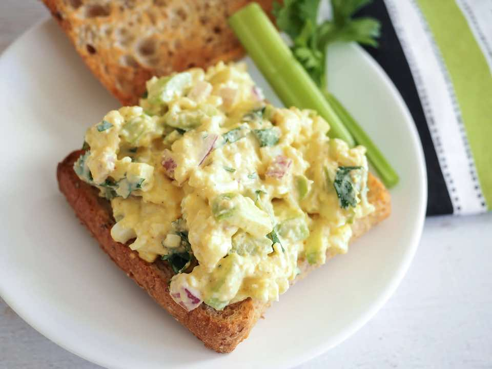

About 1 — The Forgotten Carols
PrepPT0S
CookPT0S

Ingredients
- 1 doz. boiled eggs (mashed with a potato masher)
- Radishes, bacon bits, green onions, celery (to taste)
- 1 c. mayonnaise
- 1 T. mustard
- 1/2-1 c. cool whip
- 1 t. salt
- 1 t. ground pepper
- 1 t. curry
Directions
- Mix together the mayo, mustard, cool whip, salt, pepper and curry then combine it with the mashed egg mixture.
- Here is a review with more serving tips:
- I have to say that this was the best damn egg salad sandwich I have EVER had! Ever. TOTALLY swear-worthy. Like all of us had seconds, kids included. The whipped cream and curry powder totally made it. There was just a hint of curry flavor, not overpowering at all and the cream made it so light and velvety! We toasted one side of sourdough bread with butter, added some swiss cheese (per the recommendation) and then let the bread cool to room temp so that the egg salad would stay cold. I LOVED all of the textures and flavors going on. This totally replaces our recipe. Solid 10/10!
Source
https://forgottencarols.com/egg-salad-recipe
This page includes Schema.org Recipe structured data for recipe importers.